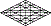

The Mystery of Iniquity

The name Lucifer means "Light Bearer." Its negative connotations stem from tradition, and that's not a bad thing; because those who have yet to question their priorities are ill-equipped to reach conclusions; their fous is parameters, and that is as it should be. Of necessity, that focus leads to outward observances because every thought of parameters is projected to measure things other than themselves, or other things in terms of themselves. Focused outwardly, even when looking inside, the realm of essence, in which all are understood as One, is not within their consideration. Becaus things and companions are perceived as "other"--as strangers, once removed from any connection to themselves, so are conceptions of the godhead. Though falling short, such misapprehension is not without benefit.
Lucifer was a wonderful light bearer: spectacular, perfect in all his ways, everything unto which a man might aspire, were it not for the iniquity found in him, the fatal flaw. This stain, if stain it was, could not have been intrinsic to Lucifer's character; for he was created as the covering cherub for all things in heaven and on earth. Iniquity was unknown in him or by him or of him until it was discovered, there. And when it was discovered, the fall was not only immediate, but d also necessary: because of the Creator's mercy and by reason of the love of HaShem hwhy, in whom we also live, moving among each other, in accordance with our states of being.
The covering cherub of heaven, then, Lucifer was perfect until ihe was not. Did he make a mistake? Did he rebel? Was he perfect only in his performance while he nursed a core or wickedness apart from the sight of him who called him perfect in his ways? I think not. In my view, iniquity has nothing to do with behavior, with thought, or with motive, aspiration, or any such thing. The iniquity found in Lucifer was not his. It came from without. The question, then, was that outside source wickedness, the devil's touch?
It's commonly understood that "iniquity" is "grossly unfair or immoral behavior." If that's the case, then Lucifer's previous perfection was a matter of his performance, rather than a predictable result of his character. If that was the case, then the perfection he once enjoyed in the mind of God was his to maintain and his to lose, if his resolve for good should fail. And if should it fail, thereby opening the cherub to regret becasuse the fault was his, iniquity would have its triumphant way, wreaking havoc on his soul, in every sense. If it were the result of failure, the inquity found in the Light Bearer would better be righteously attributed to the corrosive effects of narcissistic pride. That's a reasonable conclusion, as we are warned that "Pride goes before destruction, and a haughty spirit before a fall." In any case, the fault found in Lucifer took root in his core being and became causation. It would not have been the effect of actions or reactions.
If Lucifer's fall was due to an innate wickedness or a propensity for wickedness, the question arises: "What was God's intent in appointing the great angel with a fatal flaw to be the 'covering cherub'?" That God was somehow incompetent as a creator? Or that God created Lucifer for the purpose that he should, later, be mocked, when the iniquity had its way? Was God a sadist when he created the heavens and Earth?
We are taught that HaShem, alone, is perfect in all his ways: that there is none good, but God. It''s possible that Lucifer's perfection was contingent upon his rest withn the perfection of the Father, and that he simply made a mistake. Indeed, a meaning of "sin" is to make a mistake. Well, that begs the question of whether God created the universe and filled it with life of all kinds for the purpose of playing with it? Lucifer and all who erred were casualties of a God whose mind is dualistic: good on one hand and not good on the other. That's the kind of goodness we enjoy, but God has a goodness that transcends any values we now have.
Cutting to the chase, my view is that the imperfection discovered in Lucifer was not duie to any failing on his part, nor any incompetence or mischief attributable to the Good Creator of all things. It attributable, and indeed, intrinsic to the nature of the creative process, itself. The command was "Let there be: and the Light Bearer stepped forth in fulfillment of that Word, taking upon himself responsibility to both fulfill it and to see that the Light continued. Thus, within himself, the Light-Brearer streaked forth into infinity, so that the Light would be in all places and to every memory within time. Bearing within himself the Logos of all that now is and all that should thereafter be, Lucifer would have been remiss in his duty to Bear the Light if he did not also complete the circle of time and bring it back to its beginning, that there should be no shadow of darkness in the Creation of HaShem, the Creator of light by the force of his Word.
Consider the nature of light. It streams from its source, yes, but it has mass: photons and, God knows, what else! Mass, moving through time and space, is subject to the pull of the latenet force of inertia. Inertia is equivalent to the force of gravity, which accompanies and acts upon all mass; and the gravitational pull of inertia upon the mass of light causes light to bend as it moves through space and time. This bending of the light was necessary if the command was to be fulfilled: "Let there be"; else, there would be pockets of not-being in eternity: godless pockets, without order. In a sense, therefore, the iniquity of inertia trailed Lucifer as he performed his obligation, which was to do the Father's will. The iniquity found in him was in no way intrinsic to his character, nor did it have greater consequence than the gift of Light with with Lucifer was first entrusted. One with HaShem before the command, "Let there be," the Light Bearer needed to see to his duty.
Lucifer's fall was subsequent to the creation of the heavens and Earth; for when iniquity was found in him, the judgment was that he should be cast down to Earth, where he would live and die as a human being. Perfect before iniquity was found in him, that fault, if fault it was, would have "crept into him: unawares" as he did what was required of him. By what measurement can any accuse him of error, dtherefore?. He served in his capacity as commanded, perfect in all his ways, until the iniquity was found in him. Lucifer was not God's enemy. He was perfect in all his ways.
Should any insist upon fault, that fault must have root in the nature of the light Lucifer carried, not in the nature of his being. Were it not so, one would have to argue that God willfully chose to create a dissembling monster with whom he could compete for the love of mankind; for the Breath of Life became the light within Man. That's psycho-pathological. It that's the case, we're not sinners in the hand of an angry god; rather, we're victims in the hand of a sadistic creator. Truly, the accuser of the brethren will be cast down because to accuse any is to accuse the Creator. No, was the inquity found in Luicifer was attrituabl to the nature of the light he carried; and because light is a created thing, we understand that it serves the Father in a parable. The mystic has his indefensible views, but the realist maintains that the dynamics of Light follow codes that are imbedded and operative within the nature of all created things.
Because of the force of gravity, we understand that each of us is subject in every moment of every day to the latent pull of inertia, as is the light of which we are comprised. A young man considers the pull of gravity to be almost negligible, but time will school him with its perserverent strength. It is very strong, indeed; for without the gravitational miracle of accretion, there would be no Creation; for accretion, the child of intertia, provides the skeleton for all that is and the life it all supports.
Captive within the accretion of Creation, man sees two laws within himself: that of light, and that of darkness; that of good, and that of evil; that of the spirit, and that of the flesh; that of salvation, and that of condemnation. Man sees no alternative; for there is no honest compromise between the extremes to which he is suibject. He sees no possible solution; but with God, all things are possible, and mankind existed in the mind of God before time. The spiritual equivalent of accretion is returning man to his roots in HaShem; for we shall see him face upon faces, knowing as we are known.
I conclude that Lucifer's fall did not disqualify him from grace; for the iniquity found in him was not of his doing, but was akin to the pull inertia imposes upon Creation' matter. Neither good nor bad, inertia is a latent force capable of bending light; and Lucifer's imperfection was among its effects. With the command, "Let there be," Lucifer was fated to tumble from the immortal realm into the mortal realm, because , through Creation, he became vulnerable to the phenomenon of acretion, which is akin to incarnation. Although light has a nearly negligible mass, the weight of its photons renders it succeptible to the iniquity of gravity.
The invisible things of God are made visible in the things that are made. being the case, the conclusion is that iniquity has little to do with the tug-of-war between light and darkness, good and evil. As suggested, iniquity is the spiritual equivalent of the latent force of inertia. This is a reasonable conclusion; for the invisible things of God are visible in the things that are made, suggesting that iniquity is spiritual gravity, whose weighty pull marred Lucifer's perfection.
Just as natural light curves as it arcs across the vast dimensions of the universe because of the pull of mass, spiritual light is also affected by body mass, whether the life form is human or angelic. I don't believe that the fate of Lucifer was the result of sin or some behavioral error, precisely; rather, I think the iniquity found in him was reflective of the nature of the Light, itself: At the core of all things, light is the cohesive element of the universe. Even rocks are children of Light; for over eons, light became trapped in the pull of matter. Rocks absorb it, vegetation drinks it down, storing it in roots, that it may transform it into food to sustain animal life. Without the phenomenon of light, there would be no measurable thing anywhere.
Beginnings have endings. The loss of Lucifer's heavenly state brought radical change, but not tragic change. God is good. Aware of that goodness, the angels of HaShem shouted for joy at the creation of man, whose physical form, comprised of stored light that is capable of receiving, then reflecting or projecting, spiritual light as well.
As time unfolded, mankind would become chariots of Ruach HaQodesh, God's Holy Spirit, serving as vehicles for angelic transformation. Living and dying as men, the hosts of heaven would enter upon the task of establishing unique identities they could carry into life everlasting, which was HaShem's intent, from the beginning. The great wedding feast aproaches; and on that day, the incarnate souls who loved the Light of God will become transfigured, no longer mere bearers of Light, but as beings of Light.Working out their perfection during their lives on Earth, they shall become transformed into beings of Light through the renewal of their minds.
 This
mystery is among
the things the early followers of Y'shua were unable to bear. They were
unprepared: not because of
failings or weaknesses, but because the demands of order follow
sequence. The walk in the steps of messiah is led and paced by Ruach
HaQodesh, which rewards he faithful with gifts of knowledge concerning
the nature and ways of HaShem.
There was war--unruliness-- in Heaven because it was of paramount
importance that God's sons learn and understand "this," so they
would be able to endure, conquer, and triumph over "that."
This
mystery is among
the things the early followers of Y'shua were unable to bear. They were
unprepared: not because of
failings or weaknesses, but because the demands of order follow
sequence. The walk in the steps of messiah is led and paced by Ruach
HaQodesh, which rewards he faithful with gifts of knowledge concerning
the nature and ways of HaShem.
There was war--unruliness-- in Heaven because it was of paramount
importance that God's sons learn and understand "this," so they
would be able to endure, conquer, and triumph over "that."In times past, the apostle lamented that the mystery of iniquity was alr already at work among early believers in the Way, the Truth, and the Life. From the last seder of mashiyach Y'shua to the uproars of this present day, stumbles among believers were apparent and remain apparent. The weight of iniquity takes its toll because the lessons are difficult: impossible, except through the guidance of HaShem, and that's the point: the path of the cross leads to knowledge of the intersection of the mortal and immortal realms, teaching us of God's love as we make our way back home. Far greater than the light found in natural man, the Light within spiritual man is the very essence of the Godhead. Called to walk in the perfection of Father and Son, mankind must carry the Treasure of God's Light, which is the very Life of HaShem, in earthen vessels that must have an end.
Living the life of the Spirit in mortal bodies is a dynamic experience, and the mass of physical man man's body exerts the equivalent of the latent force of inertia within the new creature, the spiritual man. This is why Paul saw two laws operating within himself, and why the scripture speaks of twins struggling within the womb. This is why it is written, "I would not have you ignorant; for the end shall not come, except there be a falling away, first."
The fabled phoenix once flew near the Source of Light, but its wings caught fire, and the creature burned, falling to the ground at its first approach to the light of heaven. Having fallen back to Earth, it was incumbent upon the phoenix to gather itself from its ashes and to rise again. A roughly equivalent experience unfolds as natural man is consumed by inward fires, is reborn of the Holy Breath and rises again as spiritual man, joining the procession leading to the great wedding feast of the Messiah of Matthew 1:1, in the steps of the man of Matthew 1:16. In their awakend state, walking the Earth in tandem with the Salvation that comes by the will of God, believers are able to add knowledge to experience as, rising from the ashes of the errors, they again approach the gates of Heaven.
It is inevitable that the new creature rising from the waters of baptism should stumble. Offense will come, and woe to them who are the cause of it; but mercy and restoration will come upon those who must experience offense.
If we say we are without sin, we deceive ourselves; and the truth is not in us. If we confess our errors-- our sins, however, the Holy Father of us all is faithful to forgive us and to cleanse us from all unrighteousness.The filthy rags we wore in unrighteousness are replaced with spotless clothing not in the pew, but in the world's ditches, as those putting on the whoe armour of God in Messiah Yahushua lend helping hands to fallen brothers. Should believers cordon themselves off from others they perceive to be unrighteous sinners in order to protect their mistaken sense of their own righteousness, they will discover that their lamps lack oil at the great wedding feast. Itcomes nearer with every darkening day of Earth.
If we say we have no sin, no error, we deceive ourselves; and the Truth is not in us. By this we shall know that we are disciples of Master Y'shua, the Essene Teacher of Righteousness: that we have love for one another: and not only for others we see as good, but for all who live.
We judge not.
We accuse not.
We remain open to love.
|
site |
Media Memes | bookmenu |